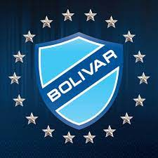

BOLIVAR

HISTORIA
El Club Bolívar es un club de fútbol boliviano con sede en la ciudad de La Paz.
Fue fundado el 12 de abril de 1925 y actualmente participa en la Primera División de Bolivia, conocida
oficialmente como División Profesional.
INFORMACION DEL CLUB BOLIVAR
COPAS:
Bolívar es el único equipo boliviano en ser semifinalistas de la Copa Libertadores de América
en su formato actual (eliminatorias desde octavos de final). Además, es el equipo boliviano con más participaciones
en torneos internacionales, con 36 Copas Libertadores, 12 Copas Sudamericanas y una Copa Conmebol.
DATOS ACTUALES
- Entrenador: Natxo González
- Liga: Primera División de Bolivia
- Fundación: 12 de abril de 1925
- Presidente: Marcelo Claure
- Nombre: Club Bolívar
- Canchas/estadios: Estadio Hernando Siles Bolivia, Estadio Libertador Simón Bolívar
JUGADORES
- Roger Cordano 17 Años
- Javier Rojas Iguaro 26 Años
- Rubén Cordano Justiniano 23 Años
- Carlos Mauricio Adorno Patiño 21 Años
- César Henrique Martins 29 Años
- José Manuel Sagredo Chávez 28 Años
- Diego Bejarano Ibañez
30 Años
- José Orlando Herrera Taborga
19 Años
- Yomar Rene Rocha Rodriguez
18 Años
- Carlos Antonio Melgar Vargas
27 Años
- Alberto Guitián Ceballos
31 Años
- Roberto Carlos Fernández Toro
22 Años
- Luis Fernando Haquín Lopez
24 Años
- Christian Osinaga
18 Años
- Juan Sebastián Reyes Farrel
25 Años
- Alejandro Granell Nogué
33 Años
- Gabriel Alejandro Villamíl Cortéz
20 Años
- Miguel Ángel Villarroel Tardio
19 Años
- Kevin Francisco Salvatierra Flores
20 Años
- Bruno Miranda Villagomez
24 Años
- Leonel Justiniano Arauz
29 Años
- Javier Uzeda Alderete
19 Años
- Rai Pablo Lima Martínez
22 Años
- Bruno Sávio da Silva
27 Años
- Patricio Julián Rodríguez
32 Años
- Francisco da Costa Aragão
27 Años
- Sebastián Melgar Parada
20 Años